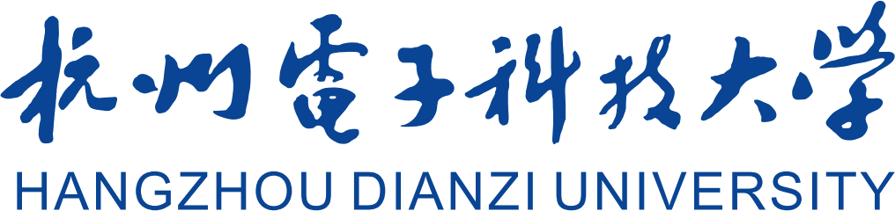

校训
笃学力行
守正求新

建校七十周年01 · Chronicle
从杭航财校到电子信息特色大学——七十年关键节点。
新建杭州航空工业财经学校，隶属第二机械工业部，是学校办学历程的起点。
1965 年更名杭州无线电工业管理学校；1970 年改为学军机器厂（四五〇九厂）厂办学校；1973 年恢复杭州无线电工业学校办学。
经国务院批准，在杭州无线电工业学校基础上建立杭州电子工业学院。
2000 年实行浙江省与信息产业部共建、以浙江省管理为主；2003 年杭州出版学校整体并入；2004 年更名为杭州电子科技大学。
1956 → 2026，七十载弦歌不辍；亦是中国工农红军长征胜利 90 周年。
02 · Spirit
校训、校风与精神基因，凝练杭电人一脉相承的价值追求。
校训
笃学力行
守正求新
校风
团结勤奋
求实创新
精神基因
国家大事
千万尽力
育人理念：以人为本、追求卓越。
03 · Campus
十景意象、育人品牌与校区格局，共同写就鲜活的校园文化。
「书海风荷」「雅湖云影」等景观命名承载书香与湖光，是校园文化意象的集中表达。
社会赞誉杭电为「IT 企业家摇篮」与「卓越会计师沃土」——指向复合型 IT 人才培养与会计人才培养传统。
校本部位于下沙高教园区（钱塘区），另有文一、东岳等校区；东岳校区建筑与原杭州出版学校一脉相承。
04 · Achievement
电子信息特色突出，经管学科优势明显。
立足浙江、依托行业、面向世界、服务社会、支持国防；工、理、经、管、文、法、艺等多学科相互渗透。
电子设计、数学建模、ACM 程序设计、智能汽车等为传统优势；2017 年第 41 届 ACM-ICPC 全球总决赛排名并列第 20。
本科、研究生、来华留学生、继续教育完整体系；教育部卓越工程师教育培养计划高校；2015 年列为浙江省重点建设高校。
众多校友成为阿里巴巴等国内电子企业领军人物；全国 IT 百强企业中近三分之一掌门人为杭电校友。
Next
30 题闯关：单选 · 趣味排序 · 填空，提交后即时解析。